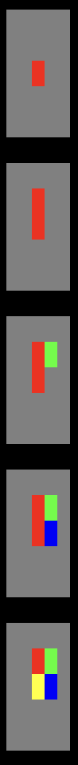

Cette semaine, petit cadeau, la solution des Semaine1 et Semaine2 est présente dans le squelette :) A la fin de l'énoncé, il vous faudra donc changer void algorithm() qui correspond actuellement à la Semaine2 avec le dessin de la Semaine3
Nous allons réimplementer le fameux mode tortue inventé par Seymour Papert il y a quelques décennies. Sans aller malheureusement jusqu'à implémenter l'interprète LOGO cependant.
Notre objectif sera d'avoir cette métaphore de la tortue se déplaçant sur une image et tenant un crayon qu'elle peut baisser ou lever et qui laisse une trace le cas échéant.
Pour cela nous avons besoin de maintenir un certain nombre d'information concernant la tortue comme :
- sa position sur l'image avec un indice de ligne et de colonne,
- la position du crayon : est-il levé ou baissé (car si baissé, cela laisse une trace lors des déplacements).
Il nous faudra aussi l'image sur laquelle elle se trouve !
Nous allons donc exceptionnellement mobiliser quelques variables globales ... afin de maintenir ces états pour les différentes fonctions permettant de gérer la tortue.
Définition des variables globales
La première étape consiste donc à définir ces variables globales :
- deux variables entières pour
lineTurtleetcolumnTurtle, représentant respectivement l'indice de ligne et de colonne de la tortue (initialement à 0 tous les deux), - une variable booléenne
penDown, qui comme son nom l'indique nous informe de la position du crayon (initialement baissé), - une variable de type chaîne de caractère
colorPenpour représenter la couleur du crayon (initalement à bleu), - et finalement une chaîne de caractère
currentImagepour représenter l'image sur laquelle se trouve la tortue.
Définissez l'ensemble des ces variables globales avec des initialisations à la déclaration.
Fonctions one liner
Pour s'échauffer, voici quelques fonctions qui peuvent toutes s'écrire en une seule ligne, tout en restant parfaitement lisibles !
Rappel : il n'est pas toujours nécessaire de dégaîner une alternative lorsqu'une condition suffit ...
| Type de retour | Nom de la fonction | Paramètres |
|---|---|---|
void
| togglePen
| ()
|
| Bascule l'état du crayon : si il est actuellement baissé, cela le relève et réciproquement, si il est levé, cela l'abaisse. | ||
| Type de retour | Nom de la fonction | Paramètres |
|---|---|---|
boolean |
within |
(int min, int max, int value) |
Vérifie que la valeur value est bien comprise dans l'intervalle [min, max].Exemples:
| ||
| Type de retour | Nom de la fonction | Paramètres |
|---|---|---|
boolean
| inside
| (int imageSize, int line, int column)
|
Vérifie si les coordonnées (line, column) sont valide pour une image de taille imageSize x imageSize.Exemples:
| ||
| Type de retour | Nom de la fonction | Paramètres |
|---|---|---|
void
| setCurrentImage
| (String image)
|
Initialise l'image actuelle currentImage avec image.
| ||
Fonctions de gestion du crayon et de ses effets ...
La semaine dernière nous avons oublié d'écrire une fonction pratique pour modifier une image ... et nous allons en avoir besoin afin de pouvoir modifier le pixel sur lequel se trouve la tortue (si le crayon est baissé bien sûr). Votre boss étant sympa, il vous donne le pseudo-code de la fonction permettant de modifier le pixel d'une image donnée en fonction de coordonnées (line, column) d'une couleur color.
String set(String image, int line, int column, String color) {
String newImage = "";
int imageSize = size(image);
int idxStart = line * imageSize * 9 + column * 9;
// on copie ce qui est avant le pixel (éventuellement rien)
// on ajoute la nouvelle couleur
// on copie ce qui est après le pixel
return newImage;
}
Il nous reste maintenant à écrire la procédure void trace() qui en fonction de l'état du crayon modifie la couleur du pixel de l'image courante sur laquelle se trouve la tortue.
| Type de retour | Nom de la fonction | Paramètres |
|---|---|---|
void
| trace
| ()
|
Si le crayon est baissé alors la couleur du pixel où se trouve actuellement la tortue est mis à jour avec la valeur de colorPen, sinon rien ne se passe. Cette procédure dépend uniquement des variables globales et ne modifie currentImage que si penDown est à vrai, c'est-à-dire si le crayon est baissé.
| ||
Fonctions de déplacement de la tortue
Nous avons maintenant les outils nécessaires pour définir nos deux fonctions de déplacement pour notre tortue :
boolean go(int line, int column): ceci correspond à un déplacement dans l'absolu, un peu comme si la tortue se téléportait directement à la position(line, column)danscurrentImage.boolean move(int[] directions): ceci correspond à un déplacement relatif d'une case vers leNORTH, leSOUTH, l'EASTou l'WEST. Pour ces deux fonctions, si le crayon est baissé, une trace apparaitra sur l'image ...
| Type de retour | Nom de la fonction | Paramètres |
|---|---|---|
boolean
| go
| (int line, int column)
|
Téléporte la tortue à (line, column) ... si cela correspond à une position valide pour l'image courante (currentImage). Si le déplacement est possible, true est retourné et false sinon.Exemples (en supposant une image de taille 5):
| ||
Définissez dans un premier temps des constantes globales permettant de représenter les 4 directions possibles (NORTH, SOUTH, EAST ou WEST), sachant que leur codage correspond à un tableau d'entiers de 2 cases dont la première correspond au décalage sur la ligne et le second au décalage sur la colonne. On ne se décale à chaque fois que d'une seule case et dans une seule direction (NORTH_EAST n'existe pas pour notre tortue !).
| Type de retour | Nom de la fonction | Paramètres |
|---|---|---|
boolean
| move
| (int[] direction)
|
La tortue effectue un déplacement relatif dans la direction indiquée, si c'est possible, sinon elle ne bouge pas. La direction correspond à l'une des constantes NORTH, SOUTH, EAST, WEST.Exemples (en supposant la tortue en (0,0)):
| ||
Maintenant, nous pouvons changer void algorithm() faire un petit dessin à l'aide de notre tortue :
void algorithm() {
String image = generate(5, 128, 128, 128, 0, 0, 0);
setCurrentImage(image);
penDown = true;
colorPen = color(0,0,0);
go(3, 3);
show(currentImage);
move(NORD);
show(currentImage);
move(SUD);
show(currentImage);
move(EST);
show(currentImage);
move(OUEST);
show(currentImage);
}
A vous de jouer pour produire bien mieux que cet exemple minimaliste et un peu provocant pour ceux ayant fait un choix de système d'exploitation les forçant à changer de machine ...
